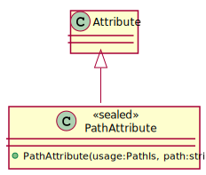

Class PathAttribute
Defines an attribute used to indicate the path to the configuration value(s) underlying a class or individual property.
Inheritance
System.Object
System.Attribute
PathAttribute
Inherited Members
System.Attribute.Equals(System.Object)
System.Attribute.GetCustomAttribute(System.Reflection.Assembly, System.Type)
System.Attribute.GetCustomAttribute(System.Reflection.Assembly, System.Type, System.Boolean)
System.Attribute.GetCustomAttribute(System.Reflection.MemberInfo, System.Type)
System.Attribute.GetCustomAttribute(System.Reflection.MemberInfo, System.Type, System.Boolean)
System.Attribute.GetCustomAttribute(System.Reflection.Module, System.Type)
System.Attribute.GetCustomAttribute(System.Reflection.Module, System.Type, System.Boolean)
System.Attribute.GetCustomAttribute(System.Reflection.ParameterInfo, System.Type)
System.Attribute.GetCustomAttribute(System.Reflection.ParameterInfo, System.Type, System.Boolean)
System.Attribute.GetCustomAttributes(System.Reflection.Assembly)
System.Attribute.GetCustomAttributes(System.Reflection.Assembly, System.Boolean)
System.Attribute.GetCustomAttributes(System.Reflection.Assembly, System.Type)
System.Attribute.GetCustomAttributes(System.Reflection.Assembly, System.Type, System.Boolean)
System.Attribute.GetCustomAttributes(System.Reflection.MemberInfo)
System.Attribute.GetCustomAttributes(System.Reflection.MemberInfo, System.Boolean)
System.Attribute.GetCustomAttributes(System.Reflection.MemberInfo, System.Type)
System.Attribute.GetCustomAttributes(System.Reflection.MemberInfo, System.Type, System.Boolean)
System.Attribute.GetCustomAttributes(System.Reflection.Module)
System.Attribute.GetCustomAttributes(System.Reflection.Module, System.Boolean)
System.Attribute.GetCustomAttributes(System.Reflection.Module, System.Type)
System.Attribute.GetCustomAttributes(System.Reflection.Module, System.Type, System.Boolean)
System.Attribute.GetCustomAttributes(System.Reflection.ParameterInfo)
System.Attribute.GetCustomAttributes(System.Reflection.ParameterInfo, System.Boolean)
System.Attribute.GetCustomAttributes(System.Reflection.ParameterInfo, System.Type)
System.Attribute.GetCustomAttributes(System.Reflection.ParameterInfo, System.Type, System.Boolean)
System.Attribute.GetHashCode()
System.Attribute.IsDefaultAttribute()
System.Attribute.IsDefined(System.Reflection.Assembly, System.Type)
System.Attribute.IsDefined(System.Reflection.Assembly, System.Type, System.Boolean)
System.Attribute.IsDefined(System.Reflection.MemberInfo, System.Type)
System.Attribute.IsDefined(System.Reflection.MemberInfo, System.Type, System.Boolean)
System.Attribute.IsDefined(System.Reflection.Module, System.Type)
System.Attribute.IsDefined(System.Reflection.Module, System.Type, System.Boolean)
System.Attribute.IsDefined(System.Reflection.ParameterInfo, System.Type)
System.Attribute.IsDefined(System.Reflection.ParameterInfo, System.Type, System.Boolean)
System.Attribute.Match(System.Object)
System.Attribute.TypeId
System.Object.Equals(System.Object, System.Object)
System.Object.GetType()
System.Object.MemberwiseClone()
System.Object.ReferenceEquals(System.Object, System.Object)
System.Object.ToString()
Namespace: OpenCollar.Extensions.Configuration
Assembly: OpenCollar.Extensions.Configuration.dll
Syntax
[AttributeUsage(AttributeTargets.Class | AttributeTargets.Property)]
public sealed class PathAttribute : AttributeRemarks
The usage and path arguments of the constructor can be used to determine whether this
property is read from a path relative to the parent or from an absolute path.
The following UML has been generated directly from the source code using Jebbs PlantUML . 
Constructors
| Improve this Doc View SourcePathAttribute(PathIs, String)
Initializes a new instance of the PathAttribute class.
Declaration
public PathAttribute(PathIs usage, string path)Parameters
| Type | Name | Description |
|---|---|---|
| PathIs | usage | The usage. |
| System.String | path | The path. |
Exceptions
| Type | Condition |
|---|---|
| System.ArgumentException |
|
| System.ArgumentOutOfRangeException |
|
See Also
System.Attribute